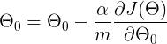

Linear Regression Simulator
Read this article on Medium

Linear Regression is the first stepping stone in the field of Machine Learning. If you are new in Machine Learning or a math geek and want to know all the math behind Linear Regression, then you are at the same spot as I was 9 months ago. Here we will look at the math of linear regression and understand the mechanism behind it.
Linear Regression. After breaking it down, we get two words ‘Linear’ & ‘Regression’. When we think mathematically, the word ‘Linear’ appears to be something related to the straight line while the term ‘Regression’ means A technique for determining the statistical relationship between two or more variables.
Simply putting it together, Linear Regression is all about finding an equation of a line that almost fits the given data so that it can predict the future values.
Now, what’s this hypothesis? It’s nothing but the equation of line we were talking about. Let’s look at the equation below.
Does this look familiar to you? It is the equation of a straight line. This is a hypothesis. Let’s rewrite this in a somewhat similar way.
We have just replaced y with h(x) and c,m with Θ₀ and Θ₁ respectively. h(x) will be our predicted value. This is the most common way of writing a hypothesis in Machine Learning.
Now to understand this hypothesis, we will take the example of the housing prices. Suppose you collect the size of different houses in your locality and their respective prices. The hypothesis can be represented as
Now all you have to do is find the appropriate base price and the value of Θ₁ based on your dataset so that you can predict the price of any house when given its size.
To say it more technically, we have to tune the values of Θ₀ & Θ₁ in such a way that our line fits the dataset in the best way possible. Now we need some metric to determine the ‘best’ line, and we have it. It’s called a cost function. Let’s look into it.
The cost function of the linear regression is
To make it look more beautiful for our brain, we can rewrite it as
Here m means the total number of examples in your dataset. In our example, m will be the total number of houses in our dataset.
Now look at our cost function carefully, we need predicted values i.e h(x) for all m examples. Let’s look again how our predicted values or predicted price look like.
To calculate our cost function, what we need is h(x) for all m examples i.e m predicted prices corresponding to m houses.
Now, to calculate h(x), we need a base price and the value of Θ₁. Note that these are the values which we will tune to find our best fit. We need something to start with, so we will randomly initialize these two values.
If you look at the cost function carefully
you’ll find that what we are doing is just averaging the square of the distances between predicted values and actual values over all the m examples.
Look at the graph above, here m = 4. The points on the blue line are predicted values while the red points are actual values. The green line is the distance between the actual value and the predicted value.
The cost for this line will be
So what the cost function calculates is just the mean of the square of the length of green lines. We also divide it by 2 to ease out some future calculations which we will see.
Linear Regression tries to minimize this cost by finding the proper values of Θ₀ and Θ₁. How? By using Gradient Descent.
Gradient Descent is a very important algorithm when it comes to Machine Learning. Right from Linear Regression to Neural Networks, it is used everywhere.

This is how we update our weights. This update rule is executed in a loop & it helps us to reach the minimum of the cost function. The α is a constant learning rate which we will talk about in a minute.
So basically we are updating our weight by subtracting it with the partial derivative of our cost function w.r.t the weight.
But how is this taking us to the minimum cost? Let’s visualize it. For easy understanding, let’s assume that Θ₀ is 0 for now.
So the hypothesis becomes
And the cost function
Now let’s see how the cost is dependent on the value of Θ₁. Since this is a quadratic equation, the graph of Θ₁ vs J(Θ) will be a parabola and it will look something like this with Θ₁ on the x-axis and J(Θ) on the y-axis.
Our goal is to reach the minimum of the cost function, which we will get when our Θ₁ will be equal to Θₘᵢₙ.
Now, to start with we will randomly initialize our Θ₁.
Suppose, the Θ₁ gets initialized as shown in the figure. The cost corresponding to current Θ₁ is equal to the blue dot on the graph.
We are subtracting the derivative of the cost function w.r.t Θ₁ multiplied by some constant.
The derivative of cost function w.r.t Θ₁ gives the slope of the curve at that point. Which in these case is positive. So we are subtracting positive quantity from our current value of Θ₁. This will force Θ₁ to move in the left direction and slowly diverge to the value of Θₘᵢₙ where our cost function is minimum. Here comes the role of α which is our learning rate. It is the learning rate which decides how much we want to descent in one iteration. Also, one point to note here is that as we are moving to the minimum, the slope of the curve is also getting less steeper that means, as we are reaching the minimum value, we will be taking smaller and smaller steps.
Eventually, the slope will become zero at the minimum of the curve and then Θ₁ will not be updated.
Think of it like this. Suppose a man is at top of the valley and he wants to get to the bottom of the valley. So he goes down the slope taking larger steps when the slope is steep and smaller steps when the slope is less steep. He decides his next position based on his current position and stops when he gets to the bottom of the valley which was his goal.
Similarly, if the Θ₁ is initialized on the left side of the minimum value,
The slope at this point will be negative. In gradient descent, we subtract the slope, but here slope is negative. So, the negative of negative will become positive. So we will keep on adding until it is reached where cost becomes minimum.

The above figure is a good depiction of gradient descent. Note how the steps are getting smaller and smaller as we are reaching the minimum.
Similarly, the value of Θ₀ will also be updated using gradient descent. I did not show it, because we need to update the values of Θ₀ and Θ₁ simultaneously which will result in a 3-dimensional graph (cost on one axis, Θ₀ on one axis and Θ₁ on another axis) which becomes kind of hard to visualize.
We are using a derivative of the cost function in gradient descent.
Let’s look at what we get after differentiating it.
Similarly, for Θ₁

In this visualization, you can see how the line is fitting to the dataset. Note that initially, the line is covering the distance very quickly. But as the cost is decreasing, the line becomes slower.
The code for the above visualization is available on my GitHub.